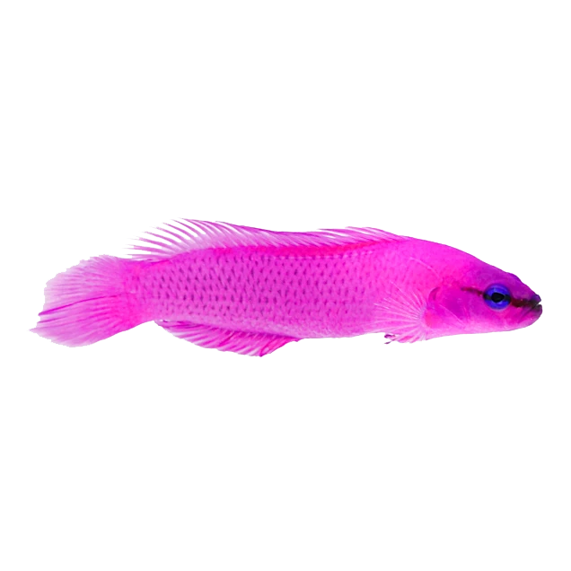

Orchid Dottyback Fish

Common Name: Orchid Dottyback
Scientific Name: Pseudochromis fridamani
Adult Size: 3 inches
Habitat: Indian Ocean and Red Sea
Behavior: Semi-Agressive
Lifespan: 3-5 Years
Diet: Carnivore
Reproduction: External fertilization with the male guarding the eggs
Cool Facts: Females can chnage their sex to male, but not the other way
Other names: Fridman's Dottyback